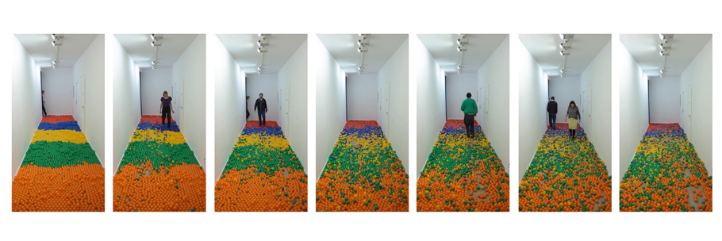
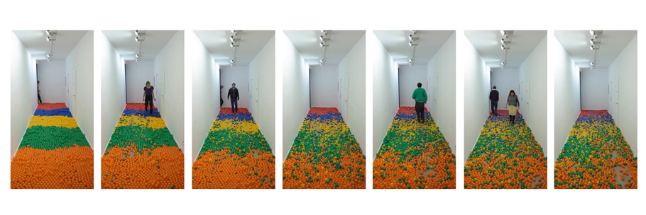

Ballz
In collaboration with Rachel Smith, Lodewijck van Heylen, Tobias Zimmer and Martin Schneider
A study through movement and movement behaviour.
With 40.000 ballfit balls in the gallery space we recorded the movement of the visitors over the course of three months. Before the opening the balls were all sorted to colour and placed in their own area. Over the course of weeks and months the balls started to mix and started to document behaviour patterns.

 
